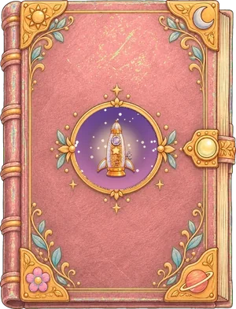
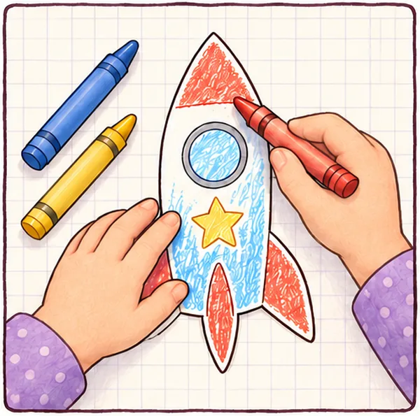
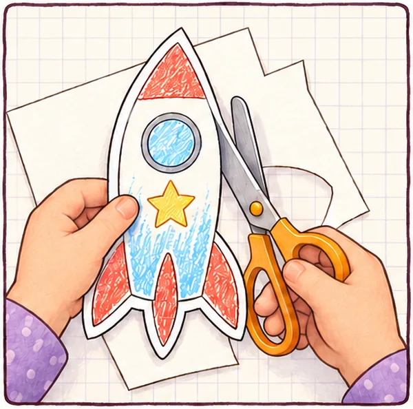
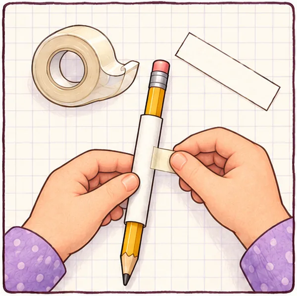
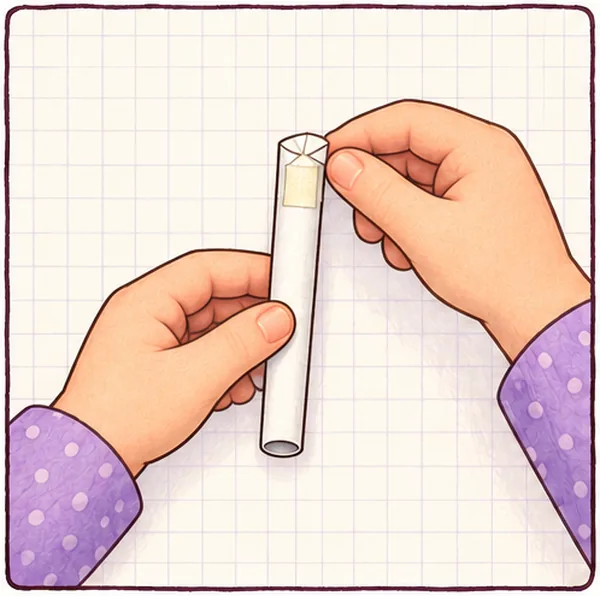
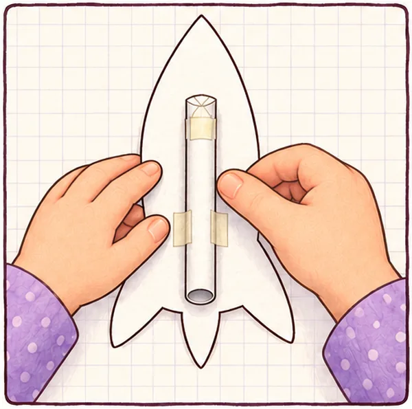
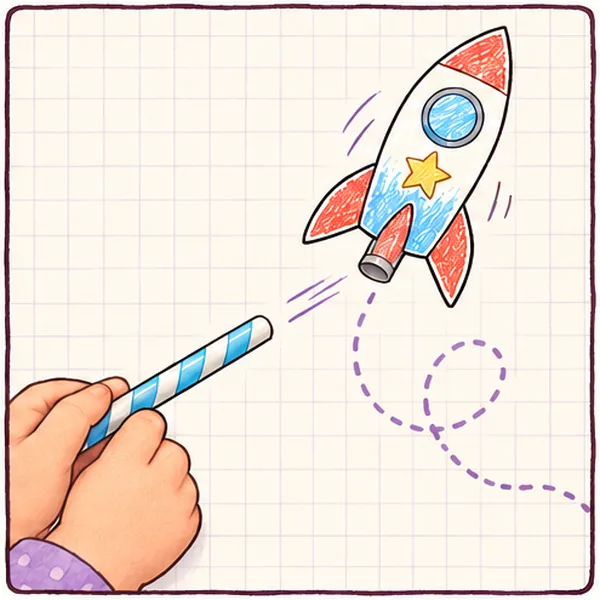

How to make a paper straw rocket
An easy rocket craft for kids aged 4 to 7

- Ages 4 to 7
- About 20 minutes
- Low mess
Colour it, roll it, blow it! Make a Star Rocket just like Sola's, then send it zooming across the room with one big puff through a straw.

From Book 2: The Star RocketRead the story, then build your own rocket.A free printable rocket template to colour in (or color in). It prints at real size, so choose "Actual size" or "100%" when you print.
What you need
- The Star Rocket printout (or plain printer paper)
- Crayons or felt-tip pens
- Child-safe scissors
- Sticky tape
- A pencil, a little fatter than your straw
- A thin drinking straw
Make your rocket in 6 steps
-

-

Step 2: Cut it out
Cut along the dashed line round your rocket. Cut out the long strip too. A grown-up can help with the scissors.
-

Step 3: Roll a tube
Roll the strip around a pencil that is a little fatter than your straw. Not too tight! Tape it along the edge.
-

Step 4: Close the top
Slide the tube off the pencil. Fold the starry end over on the dotted line and tape it shut, so no air can get out.
-

Step 5: Tape on the tube
Turn your rocket over. Tape the tube up the middle of the plain back, with the closed end near the nose and the open end by the fins.
-

Step 6: Blast off!
Slide the open end onto a thin straw. Count down with me: three, two, one... blow!
Oh bolts! Did it flop?
Even Oro's rockets flop sometimes. Try these:
- Barely moves? Air is leaking out. Tape the folded end all the way across.
- Falls off the straw? Roll a new tube a little tighter.
- Won't slide on? Roll the tube a little looser.
- Too heavy? Use ordinary printer paper, not card.
- Still stuck? Use a thin drinking straw, not a wide bubble-tea straw.
- Then blow one short, strong puff. Try soft and strong puffs and see what changes!
Make it Starcora
Oro loves a countdown! Take turns being Oro: arms up high and shout "three, two, one, blast off!" while someone else blows. Whose rocket flies the furthest?